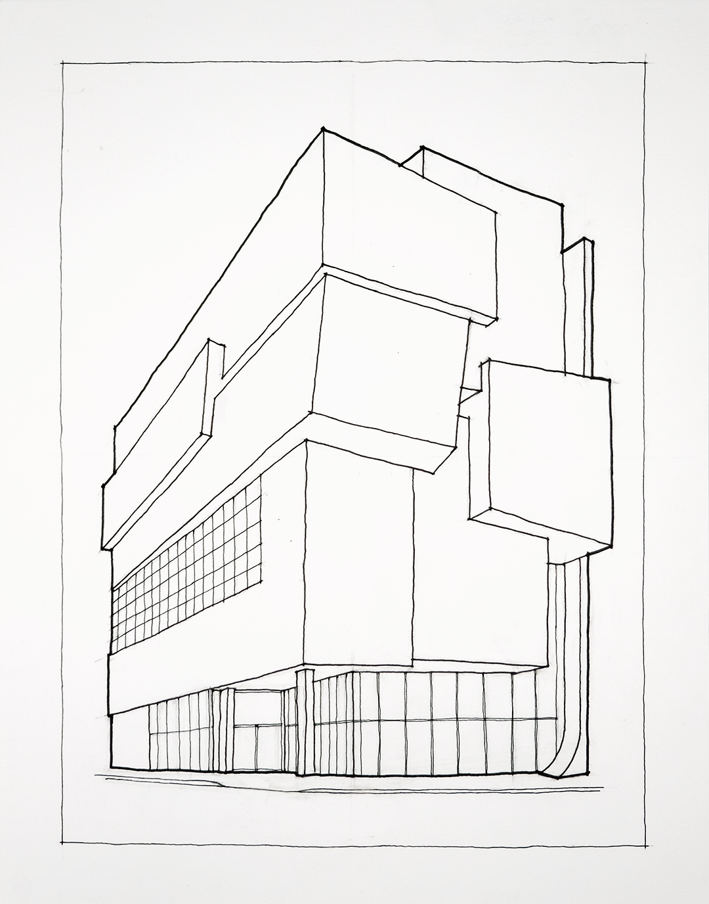
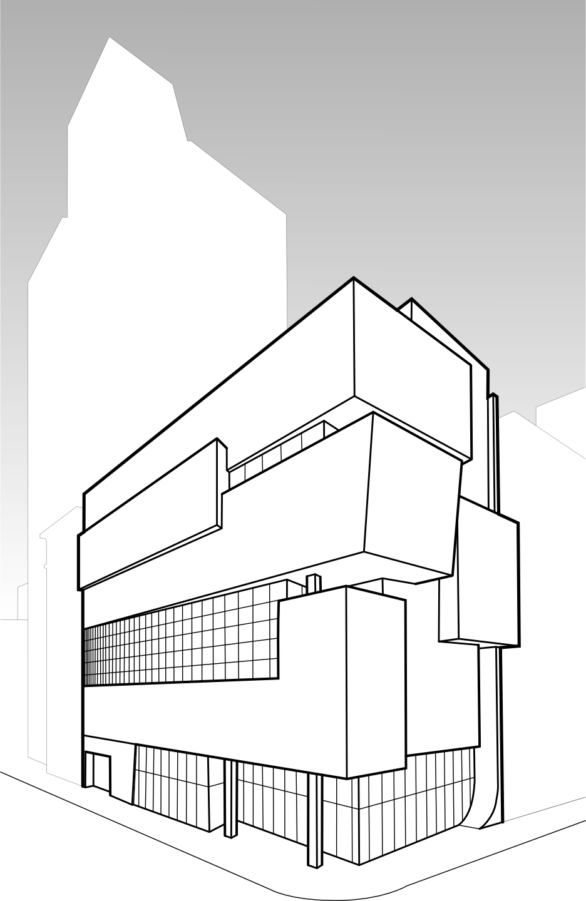
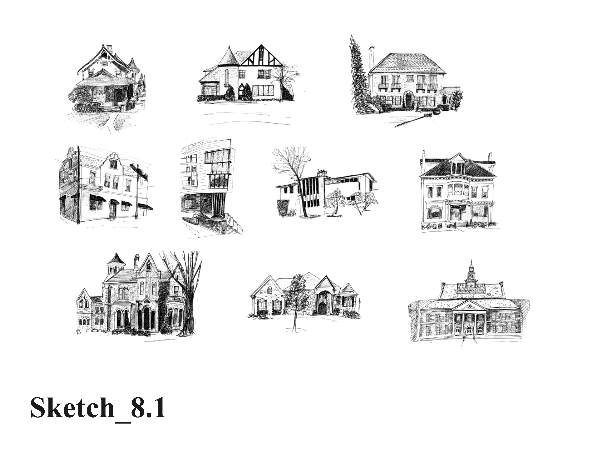

 
Figure 6.1.5: Exercise Ten. Contour Line Drawing of Eye-level Perspective
Select one of your drawings from Sketch H. Field Sketches of Ten Architectural Perspectives to develop as a finished drawing. Build up information in a layered drawing process. Start with lightly drawn converging lines and lines to indicate horizon line and vanishing point (if they fit on the page). Locate objects and use sighting techniques to compare height, width, and angles. Begin to add weight to the outline of the object as you become more confident in their size and location. Finish the drawing by adding strong, crisp line weights to make the drawn objects read. Use a perspective framework, add line weight, horizon lines and converging lines.
This drawing is large and should have minimal detail. It is therefore important to concentrate attention on line quality. There must be proper line weight differentiation and hierarchy. The final drawing shall be one 11" x 14" (279x356mm) drawing. The drawing will be assessed on line quality and perspective and completeness of the drawing. No tone value delineation should be included for this assignment. Please see tip below about line profiling.
This assignment module contributes to the following design learning outcomes, which finish the sentence “As a successful student in this course, I am now able…”
… to directly observe shape and forms and measure and translate the spatial scene accurately from an implied image plane to a proportionally scaled drawn surface.
… to control line weight and consistency (e.g., width, continuity, and control.)
We discussed in a previous chapter and in Exercise Three. Contour Drawing of Still Life from Direct Observation the various reasons why a contour line drawing is effective at showing formal qualities. Now that we are drawing architecture, it is even more evident. It is an important analytical tool for architecture. Please refer to that prior discussion in Chapter Two. What is interesting and different about Exercise Ten is the contribution that linework differentiation makes to the reading of our drawing. Let’s focus in this section on the relationship between the different types of edges we observe in nature (hard to soft to lost edges) and how our contour drawings can reflect this phenomenon. By reading we are talking about how the composition leads the viewer’s eyes around the page. In his book Mastering Composition (Roberts 2008, 112) Ian Roberts describes a useful system for controlling the reading of paintings. We can adapt some of these ideas:
Working either from life or from a photograph, establish the main lines of influence, he calls armature, that lead the viewer to the focus of interest you choose:
verticals such as building edges
horizontals such as the horizon line
curving lines and diagonal lines such as roads, plantings, etc.
Analyze the tonal variations in a thumbnail sketch. These establish the main tonal shapes.
Create an emphasized edge sketch of lines:
High contrast between the tonal variations is darkest
Low contrast and lost edges are the lightest and maybe don’t exist as lines at all in the sketch.
With this new analysis and understanding, proceed to construct the contour perspective with the confidence of a very good road map based on intention and composition. 5. Refer to the video below where this painting-centric approach informs the perspective contour drawing, especially the relative line weights.
Pencil
Bristol board, 11" x 14" (279x356mm)
Select an architectural perspective from Sketch H. Field Sketches of Ten Architectural Perspectives. Compose a perspective oblique view that shows two sides of a building: a major side that is roughly two-thirds wide and a minor side one-third wide.
Layout your sheet so that the perspective view mostly fills the drawing area. Remember to layout a one inch (25mm) border on drawing sheet.
It is intended that this is a freehand perspective. The emphasis on great line quality is functionally about two qualities: line weight that reflects depth of three-dimensional space and consistency. This is a different challenge than before because you are rendering line with a felt-tipped pen instead of a pencil.
Another option for this drawing is to use a computer and a vector-based drawing program such as Inkscape and Adobe Illustrator. In this case the lines are not freehand. They are more precise, which may appeal to some students.
It is a significant challenge to confirm that the perspective is perfect and correct. The second challenge is a correct linework mapping. We have practiced this in several exercises and sketches leading up to this exercise.
Figure 6.1.6: Video Still. Contour Line Drawing of Exterior Perspective
Several iterations may be necessary to make corrections. The best way to do this by hand is to use tracing paper overlays. Once you are confident in the perspective quality, then you can transfer the linework with a light pencil to the finished paper.
The most natural approach that gives a livelier drawing quality is to build the perspective over several iterations. A tracing of a photograph is an option; however, the results can seem both distorted by the camera lens and somewhat machine-like. The human touch should not be underestimated.
| DLO | Advanced (4 pts) | Proficient (3 pts) | Developing (2 pts) | Beginner (1 pt) | |
| Craft | Illustrator demonstrates exemplary attention to work product and excellence. | Illustrator demonstrates good attention and care towards work product. | Illustrator completes work, but the product seems rushed to completion. | Illustrator demonstrates attention towards work product, but work quality is | |
| Rendering | Illustrator uses line to hold the viewer's attention. Image is controlled and evokes both power and subtlety. Image is descriptive and/or symbolic and supports compositional goals. | Illustrator's line work demonstrates several professional attributes. Rendering style does not distract the viewer and generally supports compositional objectives. | Illustrator's use of line is somewhat effective. Rendering style is consistent and competent. There are some non-contributing attributes. | Illustrator attempts to use line descriptively. Rendering is inconsistent and lacks attention to craft. | |
| Technical | Illustrator observes and analyzes object data and translates it to a meaningful graphic representation. Professional conventions are followed, inclusive of line weight, orthographic and dimensional information. | Illustrator observes and analyzes object data and translates it to a meaningful graphic representation. Most professional conventions are followed, and some information is missing. | Illustrator is challenged to observe and analyze object data correctly. Few professional conventions are followed, and some information is missing. | Illustrator attempts to observe and analyze object data and representation is inconsistent. Professional drawing conventions are not followed. | |
| Professionalism | Student completes the work on time. Work demonstrates exemplary attention to learning objectives. | Student completes the work on time and demonstrates a good work ethic. | Student generally completes the work at a minimum level of expectation. | Student is missing parts of the work and makes a plan for completion of the remaining assignment. |
Sketch G. Field Sketches of Five Architectural Details
Exercise Six. Perspective Projection and Tone Value Render of a Small Guest House
When a figure floats isolated in a sea of empty space, its presence is emphasized…. The figure stands out clearly as a positive shape against an empty, diffuse, and shapeless background…. Vignette[:] Situating the drawing in a large field emphasizes its individuality. The space between the drawing and the edge of a sheet typically should be similar to or larger than the dimensions of the drawing. (Ching 1998, 32 & 307)
Using a pen, draw 10 freehand perspectives of architecture from observation. Include lines indicating convergence, diminution, overlapping, foreshortening, horizon line, and vanishing points. Work rapidly, loosely, and at a relatively large scale. Each drawing must be on a separate page and be approximately 10-15 minutes.
Figure Sketch H. Field Sketches of Ten Architectural Perspectives
This assignment module contributes to the following design learning outcomes, which finish the sentence “As a successful student in this course, I am now able…”
A sketch is the product of a variety of lines assembled to make shapes that resemble realistic forms. Detail is added to these shapes to give them more meaning and identity. A final dimension is achieved by the addition of tones and black to represent differences in light on the various planes and to depict shadows and shades…. One must develop a quick, confident, positive, and accurate stroke of line in order to make convincing shapes, details, and tones. This takes many hours of simple practice. (Oliver 1979, 15)
There is a group of architects the author belongs to on social media called “Architectural Sketching” where it has been debated what constitutes a sketch. In this course of study we do technical drawings, renderings and illustrations, electronic modeling, and sketches. Most architects who were educated before computers have a very clear idea of what a sketch is. A collage ethic combined with the ease of electronic modeling and layered image editing programs have all combined to blur the distinctions for new students. The author considers this experimentation a positive development. Nonetheless, there is a great benefit to developing the traditional skillset to make a quick sketch from direct observation, and en plein air. This exercise will challenge you to develop these sketching skills.
Felt-tip pen or fine point pen
Sketchbook
On a single page of your sketchbook and working at a relatively small scale (i.e., 5“x7” or 130x180mm) block out the major shapes and relationships in light construction lines of the architecture as a vignette.
After making adjustments and corrections begin rendering the varying edge types (e.g., sharpest to softest and lost edges) with line work.
Finish rendering and confirm that you have varied the line thickness (e.g., spatial, planar, and textural edges.)
It is important to start from the largest shapes before moving to details. The process starts by finding the major vertical and horizontal lines in the scene. Next you can add the diagonal and curvilinear lines using the vertical and horizontal lines as reference.
Once you are satisfied with the proportions and relationships of the shapes defined by the lines, then block in the tone-value relationships using varying densities of pattern blocks. Because we are using a pen, gradients are formed from varying the density of lines.
Only until you are confident about the shapes, proportions, balance and linework of the composition should you attempt to render any detail.
| DLO | Advanced (4 pts) | Proficient (3 pts) | Developing (2 pts) | Beginner (1 pt) | |
| Craft | Illustrator demonstrates exemplary attention to work product and excellence. | Illustrator demonstrates good attention and care towards work product. | Illustrator completes work, but the product seems rushed to completion. | Illustrator demonstrates attention towards work product, but work quality is | |
| Rendering | Illustrator uses line to hold the viewer's attention. Image is controlled and evokes both power and subtlety. Image is descriptive and/or symbolic and supports compositional goals. | Illustrator's line work demonstrates several professional attributes. Rendering style does not distract the viewer and generally supports compositional objectives. | Illustrator's use of line is somewhat effective. Rendering style is consistent and competent. There are some non-contributing attributes. | Illustrator attempts to use line descriptively. Rendering is inconsistent and lacks attention to craft. | |
| Technical | Illustrator observes and analyzes object data and translates it to a meaningful graphic representation. Professional conventions are followed, inclusive of line weight, orthographic and dimensional information. | Illustrator observes and analyzes object data and translates it to a meaningful graphic representation. Most professional conventions are followed, and some information is missing. | Illustrator is challenged to observe and analyze object data correctly. Few professional conventions are followed, and some information is missing. | Illustrator attempts to observe and analyze object data and representation is inconsistent. Professional drawing conventions are not followed. | |
| Professionalism | Student completes the work on time. Work demonstrates exemplary attention to learning objectives. | Student completes the work on time and demonstrates a good work ethic. | Student generally completes the work at a minimum level of expectation. | Student is missing parts of the work and makes a plan for completion of the remaining assignment. |
Exercise Three. Contour Drawing of Still Life from Direct Observation
Sketch G. Field Sketches of Five Architectural Details
Exercise Ten. Contour Line Drawing of Eye-level Perspective
Create an 8.5" x 11" (A4) portfolio of all your exercises and sketches done so far. Use 1 page per project. Below is a section called Related Assignments. There are 22 items. Two of these items are in the following chapter and should be included in the electronic portfolio when completed. Scan or photograph your work into digital format and then compose the document using a desktop publishing application (e.g., Adobe InDesign, Scribus, etc.) Label each assignment. Create a title page for your document. On the title page, include a short response to the following two questions in 200 or less words. What drawing skills have improved during this course of study? Why is (or is not) drawing important to the design process? Export a portable document format (i.e., pdf) at 150 ppi.
This assignment module contributes to the following design learning outcomes, which finish the sentence “As a successful student in this course, I am now able…”
… to coordinate and archive drawings and illustrations in a professional portfolio for use in communicating skills progress.
… to analyze and reflect on the meaning of the learning in this course.
Our goal with this exercise is to create an electronic learning portfolio. It is important to be comprehensive with your collection. You are going to be showing all your prior work in this course of study. One purpose is to develop experience of archiving and cataloguing your personal work. You should keep this discipline throughout your career. A second specific purpose for us is to quickly assess your development in this course of study. When you flip through the pages of your learning portfolio, you will no doubt gain confidence in your ability to develop your architectural illustration skills.
Scribus or InDesign (i.e., desktop publishing application.)
Digital photos of all exercises and sketches
Begin by creating a folder (i.e., directory) on your computer. You may want to name it something like Name_Ex_12_Folio. Create a subdirectory called images.
Collect all the digital photographs that you have carefully shot on your phone with excellent lighting conditions.
Open the desktop publishing program and create a main template page. Refer to the video below for a demonstration. On this template you should create at least two entities: an image placeholder and a text box placeholder.
Duplicate this template page at least 21 times per the list of “Related Assignments” below. We have not yet done the two assignments: Sketch I. Field Sketches of a Monumental Stair System and Exercise Thirteen. Ray-tracing Render of a Stair Model. Leave these two final sheets blank for now.
Establish a naming convention for each caption on the page. Get the appropriate image from your images subfolder, change the text to the appropriate caption. Rinse, Wash and Repeat! Don’t forget to save frequently.
Pay some attention to the “Tips” section below for photography tips and for keeping this document to a manageable size. As you can imagine, the quality of your photographs is very important.
Export this file in portable document format. It is very important to remember two problems that arise with native file formats (e.g., InDesign.indd and Scribus.sla.) First, your viewer is not likely to have these programs, yet everyone has access to Adobe Acrobat Reader. Second, desktop publishing programs often link outside image resources instead of embedding the images in the document. It can be embarrassing when you send a document with broken links…not the professional competency you want to project!
When you change the lens opening from one f-stop to the next, you are adjusting the aperture “one stop.” The f-stop series has been arranged so that each such change either doubles the intensity of light or cuts it in half. When you go down to the next smaller aperture (from f/4 to f/5.6, for instance), you are “stopping down” one stop and letting in half as much light. (Lovell and Folts 1984, 46)
Our eyes are amazing organs. Their ability to compensate for relative light differences instantaneously can fool us into believing that it may be brighter than we think. An overcast spring day may be around 10,000 lumens, while a small well-lit and seemingly bright studio at night is comparatively dark at around 1000 lumens. This is almost four f-stop settings darker on your camera. The physics of the camera lens are much more rigid than our eyes. You will gain a respect for the light levels achievable inside vs. outside. The best advice you can ever follow is to avoid the “garbage in, garbage out” trap. Dark photos are noisy and if there are shadows evident at all, then the photograph is probably unusable. No amount of wizardry in an image editing program can overcome poor photographic light.
Good photographic light is even, bright, and non-glaring. The easiest way to achieve this is to photograph outside, if possible, on the shady side of a building and away from reflecting elements like windows.
If weather is inclement or it is dark outside, then the classic setup for lights may be described as follows: Place a large diffusing type of lamp close to your subject and pointing at a 45-degree incidence angle to the subject. Place the same type of light 180 degrees in top view and pointing at a 45-degree incidence angle in altitude from the ground. If these lights can be diffused with a panel without compromising too much brightness, then this is ideal.
Use a tripod and the timer on your camera if possible. This helps to eliminate compromised focus.
Files intended for digital display only on a screen can effectively be as small as 640px X 800px. If you want to print the PDF and still maintain satisfactory quality, then a better size is at least 1300px X 1700px. There is no reason to make your files much more than 2600px X 3400px in size. By comparison a 640x800 image is probably less than 0.25Mb; and a 1300x1700 image is about 0.60Mb; while a 2600x3400 image is almost 2.25Mb! Multiply each one of these by 22 images, and you can surely appreciate how unwieldy this PDF, even when compressed, could be to email a potential employer.
| DLO | Advanced (4 pts) | Proficient (3 pts) | Developing (2 pts) | Beginner (1 pt) | |
|---|---|---|---|---|---|
| Craft | Illustrator demonstrates exemplary attention to work product and excellence. | Illustrator demonstrates good attention and care towards work product. | Illustrator completes work, but the product seems rushed to completion. | Illustrator demonstrates attention towards work product, but work quality is | |
| Professionalism | Student completes the work on time. Work demonstrates exemplary attention to learning objectives. | Student completes the work on time and demonstrates a good work ethic. | Student generally completes the work at a minimum level of expectation. | Student is missing parts of the work and makes a plan for completion of the remaining assignment. |
Exercise One. Breathing Lines
Exercise Two. One Hundred Lines
Exercise Three. Contour Drawing of Still Life from Direct Observation
Sketch A. 50 Contour Drawings of Hands and Feet
Sketch B. Field Sketch of a Complex Chair
Exercise Four. Hand Drafting an Orthographic Multi-view Projection of Complex Chair
Exercise Five. Axonometric Projection Contour Model of a Small Guest House
Exercise Six. Perspective Projection and Tone Value Render of a Small Guest House
Sketch C. Field Sketches of Floor Plans of Five Large Rooms
Sketch D. Field Sketches of Two Exterior Elevations of Large Buildings
Sketch E. Field Sketches of Two Interior Elevations of Large Rooms
Sketch F. Field Sketches of Five Partial Interior Sections of Large Rooms
Exercise Seven. Interior Construction Drawing. Floor Plan and Interior Elevations
Exercise Eight. Rendered Section. Hybrid Drawing
Exercise Nine. Monochrome Rendering of Architectural Detail
Sketch G. Field Sketches of Five Architectural Details
Exercise Ten. Contour Line Drawing of Eye-level Perspective
Sketch H. Field Sketches of Ten Architectural Perspectives
Exercise Eleven. Rendered Interior Perspective. Hybrid Drawing
Exercise Twelve. Preparing the Electronic Portfolio
~~ - Sketch I. Field Sketches of a Monumental Stair System ~~
~~ - Exercise Thirteen. Ray-tracing Render of a Stair Model ~~


